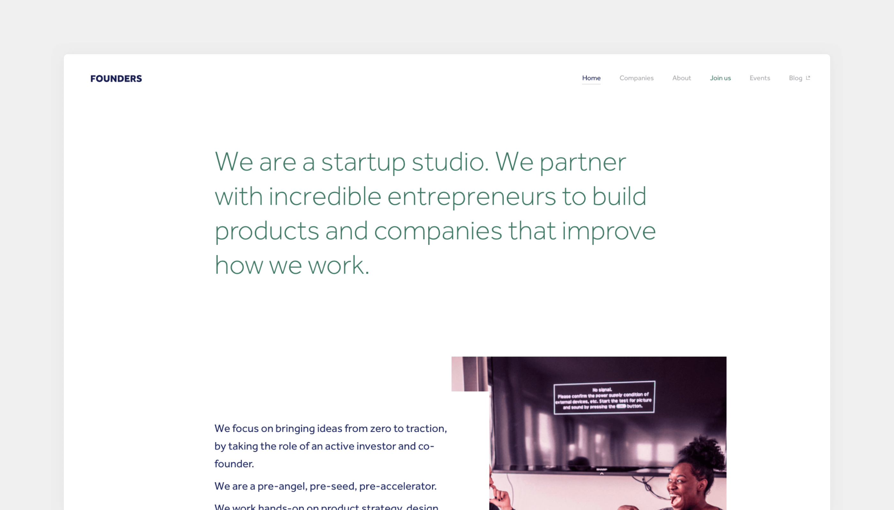
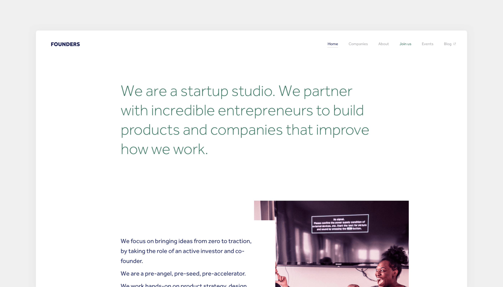

Founders Website
For two years we didn’t touch our website’s very “corporate banking” look. In 2017 we sat down to evolve how we present ourselves and our studio.
External link

For two years we didn’t touch our website’s very “corporate banking” look. In 2017 we sat down to evolve how we present ourselves and our studio.
